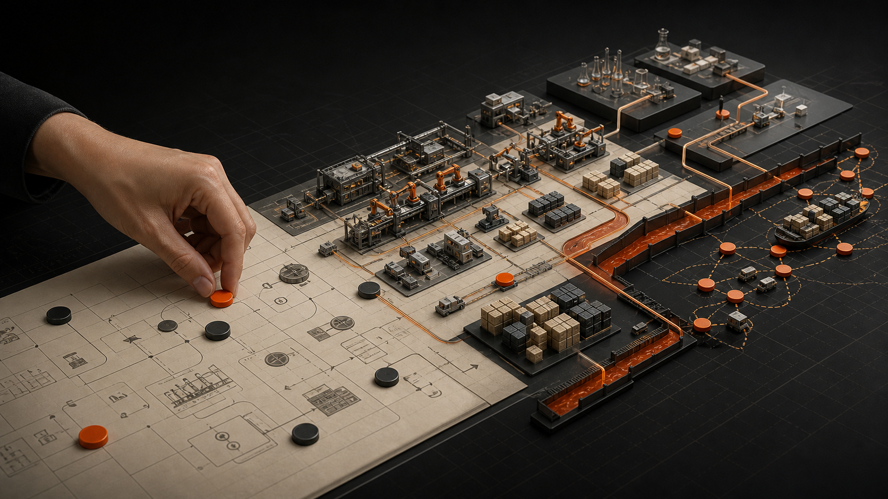

经营与管理 / 001
M201 培训有感：纸上得来终觉浅

这次培训的内容是经营沙盘，也就是让我们自己经营一家制造业公司。只有真正坐到经营者的位置上，我才意识到：很多道理在纸上都懂，但当产能、现金流、研发、市场和竞争同时出现时，决策完全是另一回事。
一、沙盘里的制造公司
公司有 X、Y 两种产品。制造系统包含组装线和材料生产线：X 由 A、B 组装而成，Y 由 B、B、C 组装而成；A、B、C 又分别由原材料生产。
产线可以从半自动升级为全自动。升级不仅提高组装产出，也能把材料加工周期从两个季度缩短为一个季度。但升级需要投入资金，而且只有真正构成瓶颈的产线升级才有价值。
市场分为本地、国内和国际三个层级。本地是成熟市场，国内与国际是增长市场。研发初始状态只支持 X 产品，市场也只开放本地；要进入新产品和新市场，就必须提前投入研发和市场开发。
财务上的矛盾也很直接：购买原材料需要支付现金，但产品销售存在一到四个季度的账期。利润存在于报表上，并不意味着公司手里有钱。
二、真正困难的是同时做很多决策
经营过程中最大的感受是变量太多，需要持续做出相互关联的决定，而管理者掌握的信息并不总是清晰。
我们在很多决策上都做错了。原因大致可以归为三类。
1. 信息透明度不足
例如市场选择和营销费用，缺少明确数据，因此它既是判断问题，也是博弈问题。
2. 缺少专人分析
更多时候，信息其实是透明的，只是没有得到足够重视。例如整个制造体系的产能分析、瓶颈识别。我们升级了很多自动化产线，后来才发现其中不少并没有必要。
3. 策略不清晰
拿单时缺少整体策略，最终容易出现违约、低价订单和资源错配。局部看起来合理的决定，放在系统里可能会造成更大的损失。
三、现金流会改变所有“最优解”
缺钱。真正掌管钱的时候，才会发现很多决策的最优解都会被现金约束。
什么时候投料、投多少，设备该租还是该买，研发和市场什么时候投入——很多动作最终都受现金流限制。
我们的结果也很直接：因为使用高利贷，第五年的财务成本达到 16M，相当于承担了 1.6 亿贷款。高昂的融资成本对经营结果产生了巨大影响。
纸面上很容易讨论利润、增长和投资回报，但企业首先必须活下来。现金流不是财务部门的局部问题，而是所有经营决策的共同边界。
四、如果重新来一次
如果重新玩，我会先把能够数字化的部分全部数字化。即使参加培训的都是 L6 及以上管理者，很多人依然缺少系统的数据分析能力。能够把复杂经营变量转化为清晰信息，本身就是对管理者的价值。
但管理者想要的不只是数据看板，还需要推演：如果增加一条产线会怎样？订单增长但回款变慢会怎样？什么时候扩产，什么时候保持现金？决策系统应该帮助管理者看到不同选择的后果。
其次，要极大重视财务。必须由专人负责财务计算和持续跟踪。对我自己而言，如果未来创业，也需要补上财务方面的知识和实践。
五、从沙盘回到真实制造
这次沙盘让我更深刻地感受到曹总的不易。沙盘对我们来说几乎是明牌，步骤也简单，变量并不算多。但真实的长鑫远比沙盘复杂：
- 制造变量指数级增加：制造周期本身就有两到四个月，上千个步骤、不同机台、十多种产品和多个市场彼此耦合。
- 信息并不透明：像游戏里的战争迷雾一样，人的因素和客观现实都会让你看到的信息偏离真实情况。
- 持续博弈：市场和供应商都在变化。到底投产多少、投什么，必须判断未来可能发生什么。
- 研发路径多样：该选择什么技术路径？什么已经成熟，什么仍不成熟？每个选择都伴随机会成本。
创业难，可能就难在这里。即使在大公司负责过大部门、管理过预算，和真正经营自己的公司仍然有巨大差异。
纸上得来终觉浅。很多能力，只能在一次次真实决策中长出来。